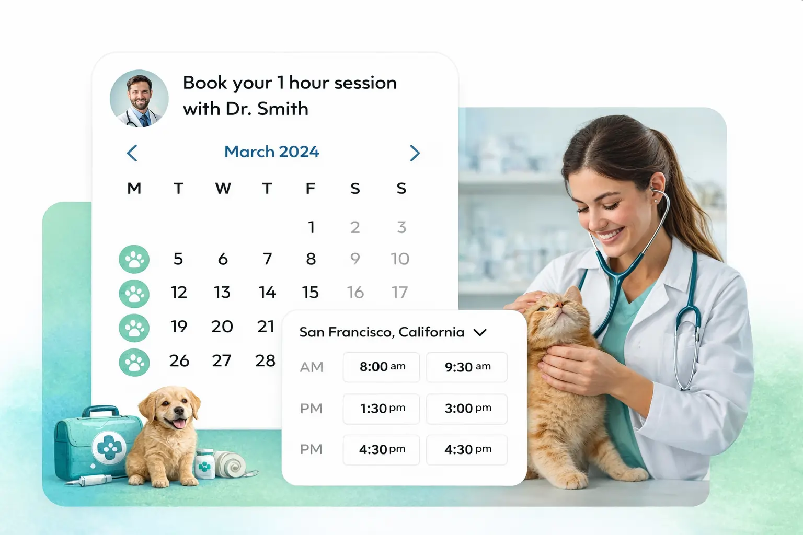

Animal, Dairy & Veterinary Sciences
S.J. & Jessie E. Quinney College of Agriculture & Natural Resources
S.J. & Jessie E. Quinney College of Agriculture & Natural Resources
Learn about our undergraduate and graduate programs in animal science. Here you’ll find concise information about career value and job-market relevance, program duration, cost, and other key details so you can quickly find what matters most to you.
Explore the diverse career paths available in animal science—from hands-on animal care and livestock management to advanced research, biotechnology, and veterinary medicine. Discover how your passion for animals can grow into a meaningful and impactful profession, and how these careers are interrelated.

Typically require advanced or graduate education.
Turn your love for animal health into a hands-on career. Diagnose, treat, and care for animals while making a real difference in their lives and their owners’.
📄 Download informative PDFShape the future of livestock and species. Use genetics to improve health, productivity, and sustainability—where science meets real-world impact.
📄 Download informative PDFWork at the cutting edge of reproduction and biotechnology. Help advance breeding, conservation, and research from the very first stages of life.
📄 Download informative PDFAsk the questions that move the field forward. From nutrition to behavior to disease, your research can improve animal welfare and industry practice.
📄 Download informative PDFBridge biology and technology to solve tomorrow’s challenges. Develop tools and solutions that make agriculture safer, smarter, and more sustainable.
📄 Download informative PDFBridge biology and technology for agriculture.
📄 Download informative PDFRequire specialized training or technical expertise.
Oversee herd health, nutrition, and production. Lead day-to-day operations on dairy operations with a focus on animal welfare and efficiency.
📄 Download informative PDFManage beef, sheep, or other livestock enterprises. Combine hands-on animal care with business and sustainability skills.
📄 Download informative PDFWork with horses in training, breeding, therapy, or management. Apply equine science to care, performance, and business.
📄 Download informative PDFDesign and implement feeding programs for livestock and other animals. Optimize health, growth, and production through nutrition.
📄 Download informative PDFAssess and improve animal care standards in production, research, or conservation. Advocate for evidence-based welfare practices.
📄 Download informative PDFDesign feeding programs for livestock and other animals.
📄 Download informative PDFOften accessible with a bachelor’s degree.
Support veterinarians in clinical and surgical care. Handle diagnostics, nursing, and client education in clinics, hospitals, or research.
📄 Download informative PDFCare for animals in zoos, aquariums, or wildlife facilities. Feed, enrich, and monitor health while supporting conservation and education.
📄 Download informative PDFRun daily operations on farms and ranches. Coordinate labor, equipment, and animal care to meet production and business goals.
📄 Download informative PDFProvide hands-on care in shelters, labs, or production. Ensure feeding, housing, and handling meet welfare and protocol standards.
📄 Download informative PDFProvide hands-on care in shelters, labs, or production.
📄 Download informative PDFSchedule a one-on-one session with veterinarians, researchers, and upper-level students in animal science. Get firsthand advice, ask about career paths, and see what a day in the field looks like.

Explore everything related to pursuing a career in Animal, Dairy & Veterinary Sciences with us.
Research centers and programs connected to ADVS
Integrated research in biosystems and biotechnology.
Veterinary education and clinical training.
Diagnostic services and lab research.
Antiviral research and development.
Stay in the loop—stories from our community, research highlights, and upcoming events you won’t want to miss. Join 3 events in a month and you will have a special discount on all your program materials when you enroll.
Wyatt serves as a QANR ambassador, president of the Animal Science Club, Utah Pork Producer Ambassador, and recently earned his American FFA degree.
Read Story →Studying Veterinary Science at USU, supporting Utah agriculture through research from his roots in Morgan, Utah.
Read Story →Ranchers from around the region gathering to add land management strategies—managing wildlife as part of ranching operations.
Read Story →Sam Skaggs Family Equine Education Center
Equine programs and breeding program showcase.
Ranchers and researchers—land and wildlife management.
Faculty and graduate student research across ADVS disciplines.
9:00 AM – 12:00 PM
Tour our dairy facilities, meet faculty, and learn about research in nutrition and herd management.
4:00 PM – 6:00 PM
Admissions overview, prerequisites, and Q&A with current DVM students and advisors.
10:00 AM – 2:00 PM
Connect with employers and organizations offering internships and full-time roles in animal and veterinary science.